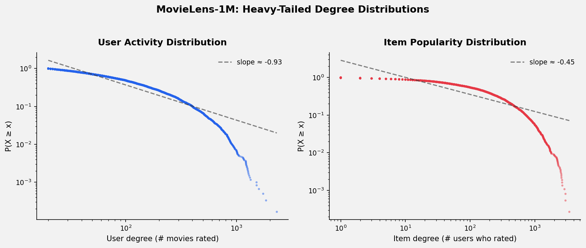
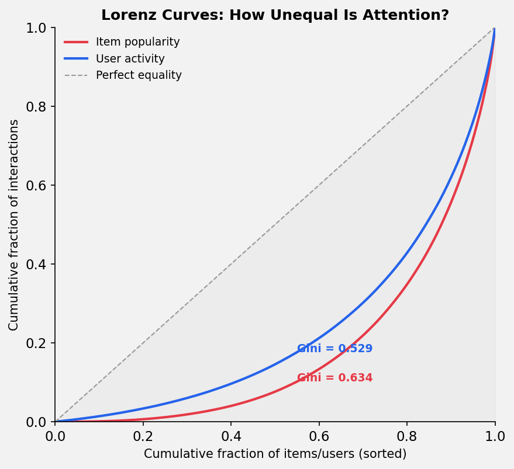
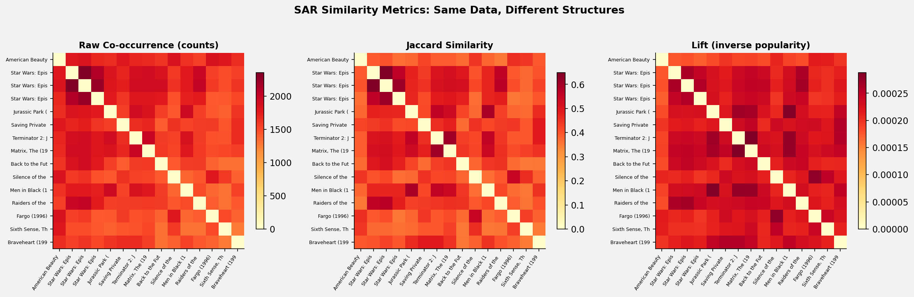
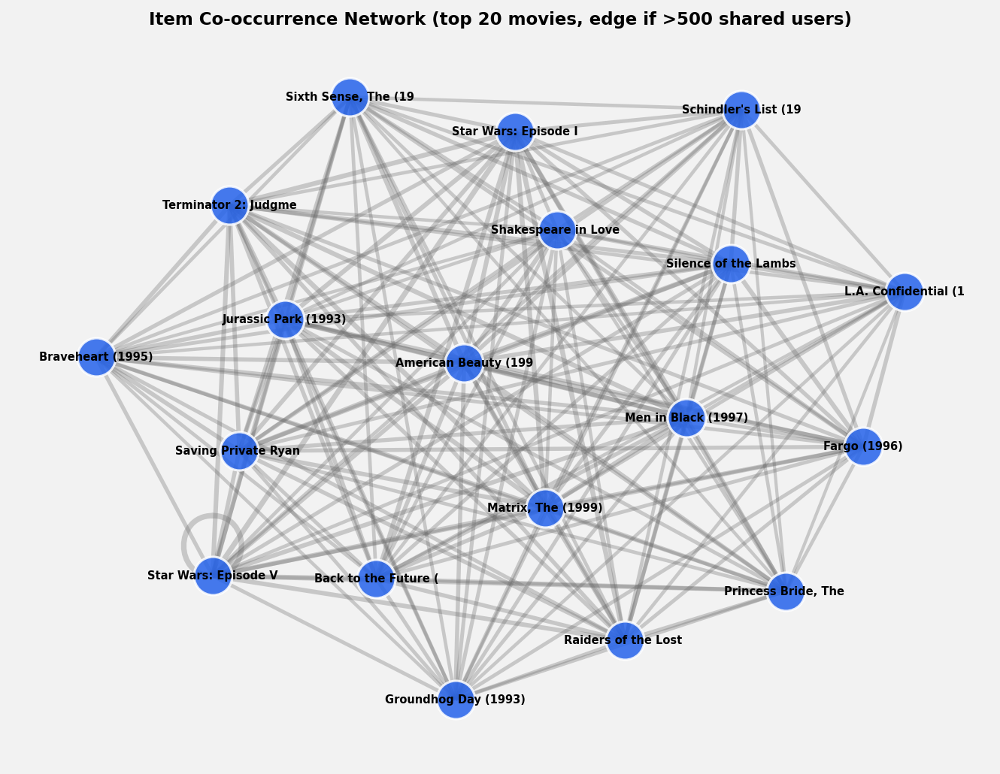

Measuring the network properties that shape what gets recommended.
Introduction
Last time, we established that every recommendation system is secretly a network problem. Today we're going to get our hands dirty and actually measure the network. We'll take MovieLens-1M — one of the standard benchmarks in the Recommenders project — and treat it as what it is: a bipartite graph with 6,040 users, 3,706 movies, and 1,000,209 edges.
The question isn't just "what does this graph look like?" It's "how do these structural properties affect what gets recommended?" Along the way, we'll connect our measurements to a concrete algorithm: SAR (Simple Algorithm for Recommendation), which the Recommenders library implements as a lightweight, training-free baseline.
The Dataset as a Graph
MovieLens-1M contains 1 million ratings from 6K users on 3.7K movies. As a bipartite graph $G = (U \cup I, E)$:
- Nodes: 6,040 users + 3,706 items = 9,746 total
- Edges: 1,000,209 (each rating is an edge)
- Density: $\frac{|E|}{|U| \times |I|} = 0.0447$ — about 4.5% of all possible user-item pairs
The graph is fully connected — a single giant component containing all 9,746 nodes. This means every user can reach every movie through some chain of shared interactions. That's not guaranteed in sparser datasets, and it matters: collaborative filtering fundamentally relies on these transitive connections.
Heavy Tails Everywhere
The first thing any network scientist does with a new graph is look at degree distributions. Here they are on log-log axes:

Both distributions are heavy-tailed. The user activity distribution (left) drops off with a CCDF slope of roughly $-0.93$, while item popularity (right) has a gentler slope of $-0.45$, indicating even heavier concentration.
In plain terms:
- Users: median activity is 96 movies, but the most active user rated 2,314. The top 10% of users account for a disproportionate share of all ratings.
- Items: median popularity is 124 ratings, but the most popular movie (American Beauty) has 3,428. Meanwhile, some movies have fewer than 10 ratings.
This isn't a quirk of MovieLens — it's a universal property of interaction networks. Barabási and Albert (1999) showed that preferential attachment ("the rich get richer") generates exactly this kind of scale-free distribution. In recommendation data, popular movies attract more ratings, which makes them more visible, which attracts more ratings. Same mechanism.
Why This Matters for Algorithms
Heavy-tailed degree distributions create a fundamental tension in recommendation:
- Popular items are easy to predict — with thousands of co-occurrence signals, any similarity-based method will confidently recommend Star Wars to everyone. But that's not useful.
- Long-tail items are where the value is — recommending a niche film that a user actually loves is far more valuable than suggesting The Shawshank Redemption for the millionth time.
- Gradient domination — in learning-based methods, high-degree nodes dominate loss gradients. Without careful normalization, the model learns to predict popular items well and ignores the tail.
This is exactly the problem highlighted in Recommenders issue #2283, which proposes adding popularity bias metrics like the Gini index and Average Recommendation Popularity (ARP) to the evaluation suite.
Measuring Inequality: Lorenz Curves and Gini
To quantify how unequal the attention distribution is, we borrow tools from economics. The Lorenz curve plots the cumulative share of interactions against the cumulative share of items (sorted from least to most popular):

The Gini coefficient — the area between the Lorenz curve and the diagonal of perfect equality — tells the story:
- Item popularity: Gini = 0.634 — highly concentrated. The bottom 50% of movies account for roughly 10% of all ratings.
- User activity: Gini = 0.529 — still unequal, but less extreme.
For context, a Gini of 0.634 is comparable to wealth inequality in the most unequal countries on Earth. The "economy" of attention in MovieLens is profoundly skewed.
The Recommenders Connection
The Recommenders library currently evaluates diversity, novelty, serendipity, and catalog coverage — but not popularity bias directly. Issue #2283 proposes metrics like:
- ARP (Average Recommendation Popularity): are we just recommending blockbusters?
- APLT (Average Percentage of Long Tail Items): what fraction of recommendations come from the tail?
- Gini Index: how uniformly are recommendations distributed across items?
These metrics exist precisely because standard accuracy metrics (Precision@k, NDCG) don't penalize popularity bias. An algorithm that recommends the top-100 most popular movies to every user might score well on NDCG but produce terrible recommendations.
SAR: A Network Algorithm in Disguise
SAR (Simple Algorithm for Recommendation) is one of the Recommenders library's signature contributions. It requires no training — just matrix operations on the interaction graph. Here's the core idea:
Step 1: Item similarity. Build a co-occurrence matrix $C$ where $c_{ij}$ counts how many users interacted with both item $i$ and item $j$. Then normalize:
$$\text{Jaccard: } s_{ij} = \frac{c_{ij}}{c_{ii} + c_{jj} - c_{ij}}$$ $$\text{Lift: } s_{ij} = \frac{c_{ij}}{c_{ii} \cdot c_{jj}}$$ $$\text{Counts: } s_{ij} = c_{ij}$$Step 2: User affinity. Build a user-item matrix $A$ (optionally with time decay: $a_{ij} = \sum_k w_k \left(\frac{1}{2}\right)^{(t_0 - t_k)/T}$).
Step 3: Recommend. Score $= A \times S$. Done.
The choice of similarity metric is a network-aware design decision about how to handle degree heterogeneity:

Look at the three heatmaps. Same data, dramatically different structure:
- Raw co-occurrence is dominated by popular items. Star Wars and American Beauty are "similar" to everything because everyone watched them. The matrix is nearly uniform — it says nothing interesting.
- Jaccard normalizes by the union of audiences. Popular items no longer dominate, and genuine structural similarity emerges.
- Lift goes further — it's essentially the inverse of expected co-occurrence under independence. It actively penalizes popularity, surfacing surprising co-occurrences between niche items.
This is the degree distribution problem in action. The choice between counts, jaccard, and lift is really a choice about how aggressively to correct for the heavy-tailed degree distribution we measured above.
The Item Co-occurrence Network
If we project the bipartite graph onto the item side (connecting movies that share users), we get an item-item network that reveals the structural backbone of the recommendation space:

This network of the top 20 movies is nearly complete — a clique. That's a direct consequence of the heavy tail: the most popular movies are watched by almost everyone, so they all co-occur with each other.
This is actually a problem. In a co-occurrence network dominated by popular items, the community structure that would help us make interesting recommendations gets drowned out by the "everyone watches everything popular" effect.
The solution? The same normalization we discussed with SAR. When you switch from raw co-occurrence to Jaccard or Lift, the effective network topology changes — the popular-item clique dissolves, and meaningful item clusters emerge.
Key Takeaways
- Recommendation datasets are heavy-tailed networks. MovieLens-1M has Gini coefficients of 0.63 (items) and 0.53 (users). This isn't noise — it's the defining structural property.
- Popularity bias is a network property, not an algorithm bug. It's baked into the topology. Algorithms that don't explicitly account for degree heterogeneity will amplify it.
- SAR's similarity metrics are network normalization schemes. The choice between
counts,jaccard, andliftis fundamentally about how to handle the power-law degree distribution. - The item projection network is nearly a clique at the top. Naive co-occurrence-based recommendations will be dominated by popular items. Normalization creates structural diversity.
- We need better evaluation. Standard accuracy metrics are blind to popularity bias. The metrics proposed in Recommenders issue #2283 (Gini, ARP, APLT) directly measure what the network structure tells us to worry about.
What's Next
Next time, we'll move from measuring the network to using it for prediction. We'll implement classical link prediction heuristics (Common Neighbors, Adamic-Adar, Preferential Attachment) as recommendation algorithms and benchmark them against SAR and learned methods on MovieLens-1M. The question: when do simple network heuristics beat learned embeddings?
Tools: Python, NetworkX, matplotlib, scipy. Dataset: MovieLens-1M. Code: GitHub.